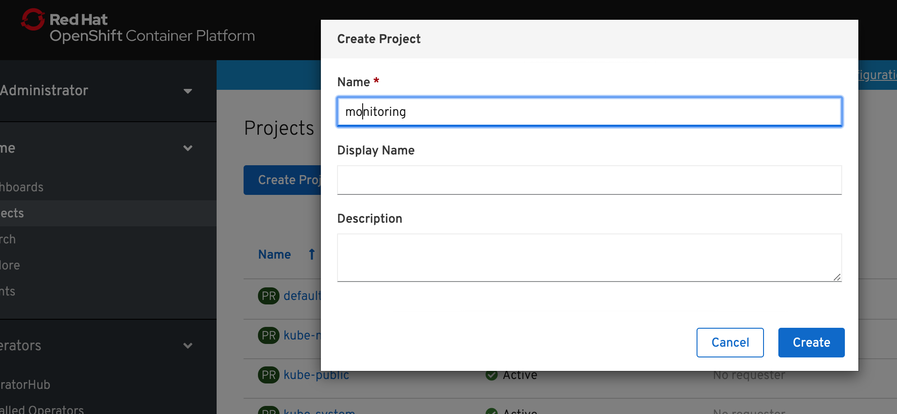
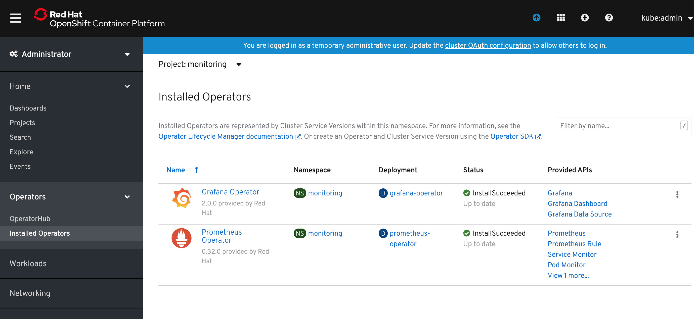
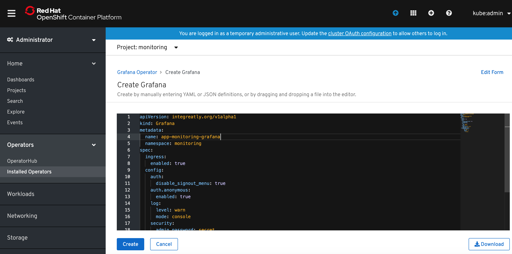
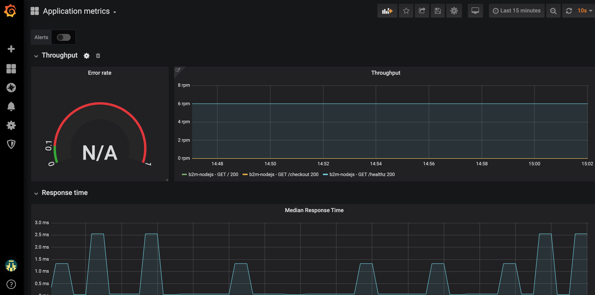
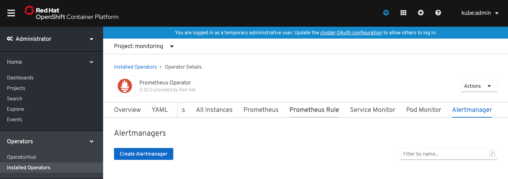
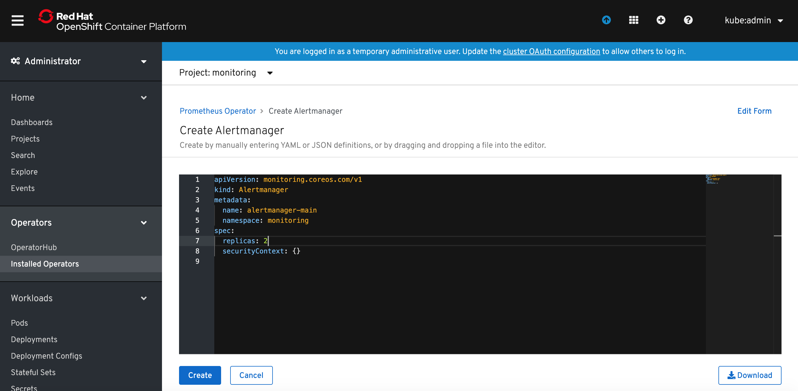

4. App monitoring on Openshift
How to monitor applications on OpenShift 4.x with Prometheus Operator¶
OpenShift Container Platform includes a pre-configured, pre-installed, and self-updating monitoring stack that is based on the Prometheus open source project and its wider eco-system. It provides monitoring of cluster components and includes a set of alerts to immediately notify the cluster administrator about any occurring problems and a set of Grafana dashboards. The cluster monitoring stack is only supported for monitoring OpenShift Container Platform clusters and adding additional monitoring targets is not supported.
In this lab we will configure application monitoring stack on Openshift 4.x using Prometheus Operator for a sample Node.js microservice instrumented with Prometheus client library (instrumentation was covered in Lab-3).
Deploy an instrumented application¶
Use the following command and provided yaml file, to deploy sample Node.js microservice instrumented with Prometheus client library.
oc new-project b2m-nodejs oc new-app https://github.com/rafal-szypulka/b2m-nodejs-v2 --context-dir=lab-4/app --name b2m-nodejs --labels='name=b2m-nodejs' --insecure-registry=true
The monitor expects the service's port name to be web so edit the service and change spec -> ports -> name to web:
oc edit svc b2m-nodejs
spec:
clusterIP: xxx.xxx.xxx.xxx
ports:
- name: web
Create a route to expose this application externally:
oc expose svc b2m-nodejs
Collect the app URL:
$ oc get routes -n default NAME HOST/PORT PATH SERVICES PORT TERMINATION WILDCARD b2m-nodejs b2m-nodejs-b2m-nodejs.apps.rsocp.os.fyre.ibm.com b2m-nodejs <all> edge None
and make sure it works:
$ curl -k https://b2m-nodejs-b2m-nodejs.apps.rsocp.os.fyre.ibm.com {"status":"ok","transactionTime":"353ms"}
Verify that it properly exposes metrics in Prometheus format:
$ curl -k https://b2m-nodejs-b2m-nodejs.apps.rsocp.os.fyre.ibm.com/metrics # HELP process_cpu_user_seconds_total Total user CPU time spent in seconds. # TYPE process_cpu_user_seconds_total counter process_cpu_user_seconds_total 0.23436700000000005 1573764470969 # HELP process_cpu_system_seconds_total Total system CPU time spent in seconds. # TYPE process_cpu_system_seconds_total counter process_cpu_system_seconds_total 0.069524 1573764470969 # HELP process_cpu_seconds_total Total user and system CPU time spent in seconds. # TYPE process_cpu_seconds_total counter process_cpu_seconds_total 0.3038910000000002 1573764470969 (...)
Deploy Prometheus monitoring stack for applications.¶
- Create a new project for the Prometheus monitoring stack for applications.

- Select Operators -> Operator Hub and select
Prometheus Operator. ClickInstall.

- In the
Create Operator Subscriptionwindow clickSubscribe.

- Wait until Prometheus Operator is deployed and click
Prometheus Operatorlink.

- Select
Prometheustab and clickCreate Prometheusbutton.

- Modify default YAML template for Prometheus. I added
serviceMonitorSelectordefinition which will instruct defined Prometheus instance to matchServiceMonitorswith labelkey=btm-metrics. I also changed the Prometheus instance name toapp-monitor.
apiVersion: monitoring.coreos.com/v1 kind: Prometheus metadata: name: app-monitor labels: prometheus: k8s namespace: monitoring spec: replicas: 1 serviceAccountName: prometheus-k8s securityContext: {} serviceMonitorSelector: matchExpressions: - key: btm-metrics operator: Exists ruleSelector: matchLabels: prometheus: app-monitor role: alert-rules alerting: alertmanagers: {}
Click Create button.

- Select
Service Monitortab and clickCreate Service Monitor.

- Modify default YAML template for ServiceMonitor. I added
namespaceSelectordefinition to limit the scope to naespacedefaultwhere my app has been deployed and modifiedselectorthat to look for services with labelname=b2m-nodejs. I also changed the Service monitor name toapp-monitor.
apiVersion: monitoring.coreos.com/v1 kind: ServiceMonitor metadata: labels: btm-metrics: b2m-nodejs name: app-monitor namespace: monitoring spec: endpoints: - interval: 30s port: web namespaceSelector: matchNames: - b2m-nodejs selector: matchLabels: name: b2m-nodejs

- Grant
viewcluster role to the Service Account created by the operator and used by Prometheus.
oc adm policy add-cluster-role-to-user view system:serviceaccount:monitoring:prometheus-k8s
or, if you want to limit it to the application namespace, add view role only to the app namespace:
oc adm policy add-role-to-user view system:serviceaccount:monitoring:prometheus-k8s -n default
- Expose app monitoring Prometheus route:
oc expose svc/prometheus-operated -n monitoring
- Collect the app monitoring Prometheus URL:
$ oc get routes -n monitoring NAME HOST/PORT PATH SERVICES PORT TERMINATION WILDCARD prometheus-operated prometheus-operated-monitoring.apps.rsocp.os.fyre.ibm.com prometheus-operated web None
- Verify that app monitoring Prometheus can scrape
b2m-nodejsapp. Access the Prometheus URL via browser and select Status -> Targets.

- Verify that instrumented metrics are collected:

Deploy Grafana Operator¶
- Deploy the Grafana Operator from OperatorHub using the same steps as for Prometheus Operator.
Now you should see it in
Operators -> Installed Operators.

- Click on the Grafana Operator link, select
Grafanatab and clickCreate Grafana.

-
Modify the name of the Grafana instance to something meaningful. I named it
app-monitoring-grafana. ClickCreatebutton. Modify also the admin user name and password. -
Return to the Grafana Operator details, select
Grafana Data Sourceand clickCreate Grafana Data Sourcebutton. Rename thename:to something meaningful (I named itapp-monitoring-grafana-datasource) and modify spec.datasources.url to your app monitoring prometheus instance. In my case it washttp://prometheus-operated:9090.

The prometheus hostname is the same as the app monitoring prometheus service name. You can find it in Networking->Services (filtered by the project where app monitoring prometheus has been deployed).
- Make the route for Grafana has been created in
Networking->Routes(projectmonitoring). If it is not listed, create it with command:
oc create route edge --service=grafana-service -n monitoring
Access the Grafana console URL and logon to Grafana. Verify the Prometheus datasource has been created and can connect to app monitoring Prometheus.
-
Import provided grafana dashboard:
b2m-nodejs-v2/lab-4/app-monitoring-dashboard.json. -
Verify that Grafana dashboard has been provisioned:

Deploy Alertmanager¶
The Prometheus Operator introduces an Alertmanager resource, which allows users to declaratively describe an Alertmanager cluster. To successfully deploy an Alertmanager cluster, it is important to understand the contract between Prometheus and Alertmanager.
The Alertmanager may be used to:
- Deduplicate alerts fired by Prometheus
- Silence alerts
- Route and send grouped notifications via providers (PagerDuty, OpsGenie, Slack, Netcool Message Bus Probe, etc.)
Prometheus' configuration also includes "rule files", which contain the alerting rules. When an alerting rule triggers, it fires that alert against all Alertmanager instances, on every rule evaluation interval. The Alertmanager instances communicate to each other which notifications have already been sent out.
In OpenShift console go to Installed Operators, click on Prometheus Operator instance, scroll tabs to Alertmanager tab.
Click Create Alertmanager button.

Specify the desired number of replicas and click Create button.

Now you can list the resources of Alertmanager and you should see Alertmanager pods in Pending state. This is because Alertmanager can't run wthout a configuration file.
The Alertmanager instances will not be able to start up, unless a valid configuration is given. The following example configuration sends notifications against a non-existent webhook, allowing the Alertmanager to start up, without issuing any notifications. For more information on configuring Alertmanager, see the Prometheus Alerting Configuration document.
global: resolve_timeout: 5m route: group_by: ['job'] group_wait: 30s group_interval: 5m repeat_interval: 12h receiver: 'webhook' receivers: - name: 'webhook' webhook_configs: - url: 'http://alertmanagerwh:30500/'
Save the above Alertmanager config in a file called alertmanager.yaml and create a secret from it using oc.
oc create secret generic alertmanager-alertmanager-main --from-file=alertmanager.yaml
Alertmanager pods should change the status to Running.

The service alertmanager-operated has been created automatically and if you want to externally expose Alertmanaget UI, create the route using the followng command:
$ oc create route edge --service=alertmanager-operated -n monitoring
Collect the Alertmanager URL:
oc get routes alertmanager-operated NAME HOST/PORT PATH SERVICES PORT TERMINATION WILDCARD alertmanager-operated alertmanager-operated-monitoring.apps.rsocp.os.fyre.ibm.com alertmanager-operated web edge None
and verify using web browser:

This Alertmanager cluster is now fully functional and highly available, but no alerts are fired against it. Configure Prometheus resource to fire alerts to our Alertmanager cluster.
Edit Prometheus resource spec.alerting section:
spec: alerting: alertmanagers: - name: alertmanager-operated namespace: monitoring port: web
and click Save.
Configure Alerting Rules¶
Alerting Rules for application monitoring can be created from the Operator Details view of our Prometheus Operator instance. Click on the Prometheus Rule tab and then on Create Prometheus Rule button.

Specify alert rule definition in the YAML file. You can use provided ExampleAlert.yaml as an example.

After short time verify that your alert(s) have been activated using Prometheus UI: